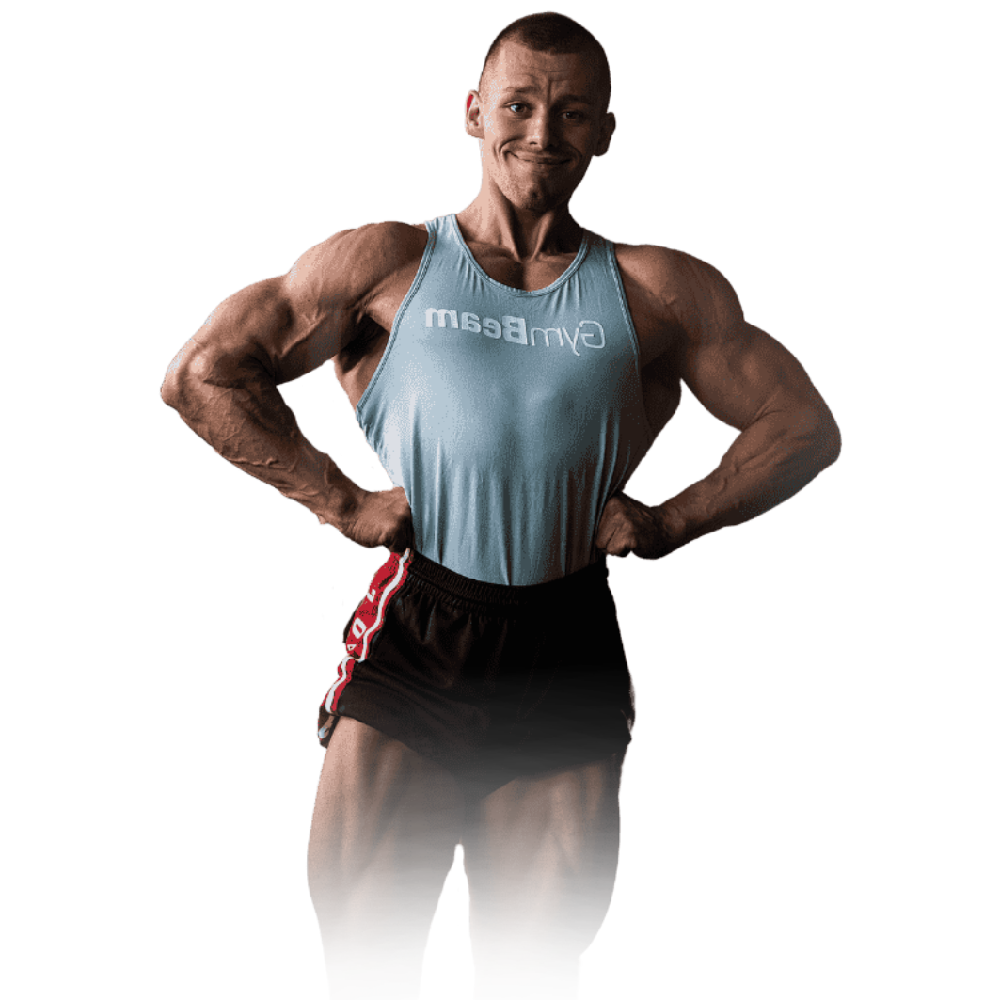
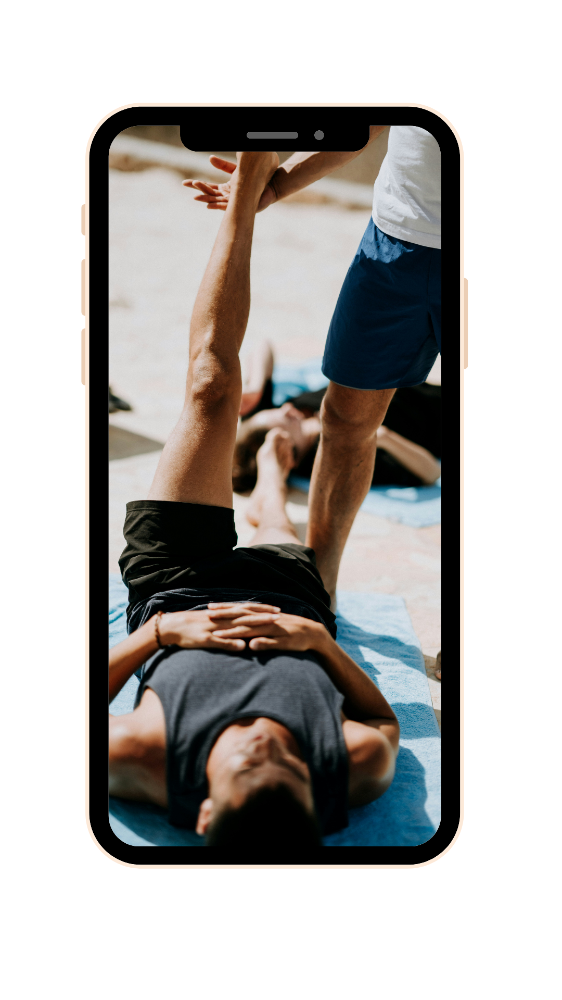

LÉPJ SZINTET VELEM
1:1 ONLINE COACHING
Valódi figyelem. Valódi eredmény.
Melletted leszek, amíg el nem hiszed, hogy képes vagy rá.
100% Figyelem, kizárólag rád fordítva
24/7 Elérhetőség
10+ Elégedett ügyfél

TAPASZTALD MEG A METÓDUSOKAT, MELYEK BAJNOKOKAT FORMÁLTAK.
A Fülöp Team összes edzője dolgozott már versenyzőkkel, személyi edzőkkel és életmódváltó hétköznapi emberekkel is – sőt, sokan közülük maguk is versenyeztek. Ezért biztos lehetsz benne: jó kezekben vagy.

A HÉTKÖZNAPI EMBEREKEN VAN A SOR

Például
hölgyek, akik a nyárra a legjobb formájukat szeretnék elérni, majd megőrizni azt hosszasan.
De lehet, hogy
büszke apukák, akik több energiát szeretnének, hogy lépést tudjanak tartani gyermekeikkel.
Esetleg
elfoglalt anyukák, akik a magabiztosságuk növelésére vágynak a mindennapi életben.
Vagy az
edzőterem megszállottjai, akik a profik módszereit szeretnék elsajátítani a diétázás és tömegnövelés terén.
Neked is megfordult már a fejedben?
.
Szükségem van extra elszámoltathatóságra és motivációra
Folyamatosan megrekedek az erőnlétem és fizikumom fejlődésében, és nem tudom elérni a „következő szintet”
Olyan edzéstervet szeretnék, ami az ÉN egyéni igényeimhez és céljaimhoz igazodik
Gondjaim vannak azzal, hogy az edzők általános étrendet adnak, én pedig olyan makrókat szeretnék, amelyek az én táplálkozási preferenciáimhoz igazodnak
Egyszer szeretnék fitness versenyeken indulni
Kezdő vagyok, és fogalmam sincs, hol kezdjem el
Ha bármelyik igaz rád, az 1:1 Coaching Neked lett kitalálva.
Teljes mértékben a saját, világszínvonalú módszereim szerint dolgozom, hogy végig motivált maradj, valóban megértsd, mit miért csinálunk, és folyamatosan közelebb kerülj a kiemelkedő eredményekhez. Ha velem dolgozol, egy valódi átalakulás vár rád – és én minden lépésnél ott leszek melletted.
SZOLGÁLTATÁSOK
EZT NYÚJTJA A PROGRAMOM
Átfogó 45 perces konzultáció
Ülj le velem egy videóhívásra, ahol részletesen átbeszéljük a lehetőségeidet, a céljaidat és a fizikumod hiányosságait
Folyamatos kapcsolattartás
A program során teljes WhatsApp elérhetőséget biztosítok, ahol 24 órán belül válaszolok bármilyen felmerülő kérdésedre
Személyre szabott edzésprogram
Személyre szabott edzésprogramot biztosítok számodra, amely figyelembe veszi az edzettségi szintedet és az edzőtermed felszereltségét
Napi nyomonövetés
Ez az eszköz lehetőséget nyújt számodra, hogy nyomon kövesd az általános előrehaladásodat és a következetességedet
Személyre szabott táplálkozási terv
Egyéni étrend, amely tartalmazza a makrotápanyagok elosztását és kalóriatartamát, valamint szükség esetén a vitaminok adagolását is
Totam thalassinus.
Degero adulatio.
Egyszerű lépések a programban
Így megy a programom lépésről lépésre
Uberrime vulgo alii.
Venia aequus stabilis.
Conicio admoneo denique.
Culpo cervus utor.

Subnecto incidunt asperiores.
Spiculum congregatio video.
Delinquo curo alienus.
Sordeo civitas despecto.
NEM SZÁMÍT MI A CÉLOD, SEGÍTEK ÁTALAKULNI
Azoknak
akik úgy érzik, elakadtak, és már mindent kipróbáltak.
Azoknak
akiknek az ereje már megvan, most a fizikumukon a sor

Azoknak
akik bikiniversenyre készülnek, és aranyat akarnak nyerni

Azoknak
akik erőben és állóképességben is szintet lépnének
GYAKORI KÉRDÉSEK,
PERSZE VÁLASSZAL
🙋♂️Közvetlenül Marcellel dolgozok?
Ha az 1:1 coaching mellett döntöttél akkor biztos lehetsz benne, hogy Marcell fog elvégezni minden étrend és edzéstervbeli változtatást, illetve Ő fog válaszolni a felmerülő kérdéseidre
🌍Ez az edzés világszerte elérhető?
Igen! Az online coaching & versenyfelkészítő szolgáltatásunk világszerte elérhető! Számos ügyfelünk, külföldi származású, beleértve Németországot, Romániát, Ausztriát, Szerbiát és Szlovákiát, hogy csak néhányat említsünk.
🥑Milyen étkezési megközelítést alkalmaz a coaching?
Edzői filozófiánk a rugalmas diéta megközelítést követi. Mi az FM Online Coaching, ügyfeleink számára makrotápanyag-célokat biztosítunk hozzárendelt étkezésekkel, és alternatíva lehetőségekkel. Tapasztalataink szerint ez a leghatékonyabb és legoptimálisabb út a lehető legjobb fizikum eléréséhez.
📅Milyen gyakran kapok új étrendet és edzéstervet?
Teljesen személyre szabott edzésprogramot kapsz, amelyet hetente frissítek a céljaidnak, fejlődésének és az aktuális edzés blokknak megfelelően úgy, hogy progresszíven fejlődj hétről hétre. Illetve kapsz egy étrendet, amely tartalmazza a makrotápanyagok elosztását és kalóriatartamát is. Az étrendet stagnálás esetén a célnak megfelelően módosítom.
📈Hogyan követhetem nyomon a fejlődésemet?
A progresszió nyomonkövetése a program alapja. Így minden általam ismert lehetőséget megadok neked a testsúly, átmérők és erő fejlődésének mérésére, hogy általad könnyen mérhető legyen a fejlődésed.
⏱️Mennyi időbe telik, hogy észrevehető eredményeket érjek el?
A legkisebb program időtávja is úgy lett megszabva, hogy a terv betartásával szignifikáns változást érjen el a izikumodban amit a környezeted is észlel.
GYAKORI KÉRDÉSEK,
PERSZE VÁLASSZAL
Közvetlenül Marcellel dolgozok?
Ha az 1:1 coaching mellett döntöttél akkor biztos lehetsz benne, hogy Marcell fog elvégezni minden étrend és edzéstervbeli változtatást, illetve Ő fog válaszolni a felmerülő kérdéseidre
Ez az edzés világszerte elérhető?
Milyen étkezési megközelítést alkalmaz a coaching?
Milyen gyakran kapok új étrendet és edzéstervet?
Hogyan követhetem nyomon a fejlődésemet?
Mennyi időbe telik, hogy észrevehető eredményeket érjek el?
Legjobban Teljesítők Klubja
A hónap kliense🏆
Miklóssal március eleje körül kezdtünk el együtt dolgozni, és néhány napon belül rájöttem, hogy mennyire komolyan gondolja és mennyire motivált, hogy megváltoztassa a testét. Ezért összeállítottam neki egy teljesen különleges és egyedi, vagyis „kézzel készített” tervet. Az eredmények magukért beszélnek. (Szép munka Miki:D)
🏆
Legjobban Teljesítők Klubja
A hónap kliense🏆
Miklóssal március eleje körül kezdtünk el együtt dolgozni, és néhány napon belül rájöttem, hogy mennyire komolyan gondolja és mennyire motivált, hogy megváltoztassa a testét. Ezért összeállítottam neki egy teljesen különleges és egyedi, vagyis „kézzel készített” tervet. Az eredmények magukért beszélnek. (Szép munka Miki:D)
🏆
Hogyan működik?
Az árazást bővebben is értelmezheted, a csatlakozásra kattintva
- Ide mit írjunk?
- Ide mit írjunk?
- Ide mit írjunk?
- Ide mit írjunk?
Success Stories & Testimonials
Our Impact, Through Their Eyes
Lavern Rolfson
Tunc eaque creator
Lavern Rolfson
Torqueo non tabula
Lavern Rolfson
Cariosus capio tripudio
Lavern Rolfson
Distinctio ademptio defungo
Lavern Rolfson
Alioqui subvenio acidus